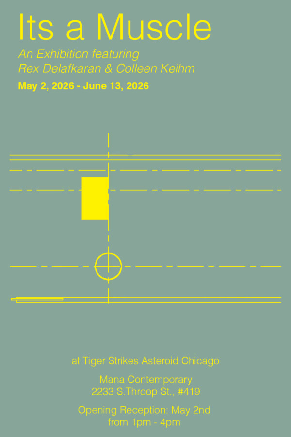

Rex Delafkaran & Colleen Keihm: It’s a Muscle
It’s a Muscle: Rex Delafkaran & Colleen Keihm
Exhibition Dates: May 2 – June 13, 2026
Opening Reception: Saturday, May 2, 1-4pm
Artists Conversation: Saturday, May 23, 2026, 2pm
Tiger Strikes Asteroid Chicago is excited to present the two-person exhibition, It’s a Muscle: Rex Delafkaran & Colleen Keihm, which explores the body’s relationship to abstraction through photographic and sculptural works. It’s a Muscle brings together two new bodies of work by the Chicago-based artists to investigate the fluttering experience of being a body in space. The works in the exhibition foreground thresholds of gestural action or slippages between sight, touch, and movement. Through a collection of photograms, drawings, words, and objects, the artists present an ever-shifting state of perception that resists the tradition of the frame as a fixed position.
Keihm’s colorful photograms, a darkroom process of one-off compositions exposed to light, reveal an openness to improvisation and playful form, enclosing and compressing sight-lines within a frame of light. This process-based practice, shaped by both structured limitations and quick edits, unfolds at a distinct pace in the dark. Moments of chance mark the artist’s interaction with the darkroom as a stage, inducing an image through choreographed, repetitive motions.
Delafkaran’s sculptures of wood, ceramic and wool activate the gallery’s floor and, through their attention to surface and silhouette, are a set of proposals for touch, play and interaction. Delafkaran’s forms are in dialogue with Persian carpets and the wooden weights used in the 11th century Persian martial art zoorkhaneh. The artist is inspired by the body’s movements, the gendered socio-cultural space of practice, and her orientation towards these objects as an American Iranian. Delafkaran’s memetic objects of mats and clubs simplify these forms and emphasize the flexibility of signifiers in the sometimes scary reductions enacted in the exercise of abstraction. They propose new, idiosyncratic ways for the body to interact with familiar objects.
With word maps, the artists examine the verbs and nouns that guide their processes and movements: center, step, enclose, lift, slip, weight, and arrange. Viewed together, the different approaches activate the space through portals of framed space, the edge of color and the invitation for interaction. The objects and images offer gentle gestures that invite and conduct us through passageways; the room and all of its contents are flexing, like a muscle.